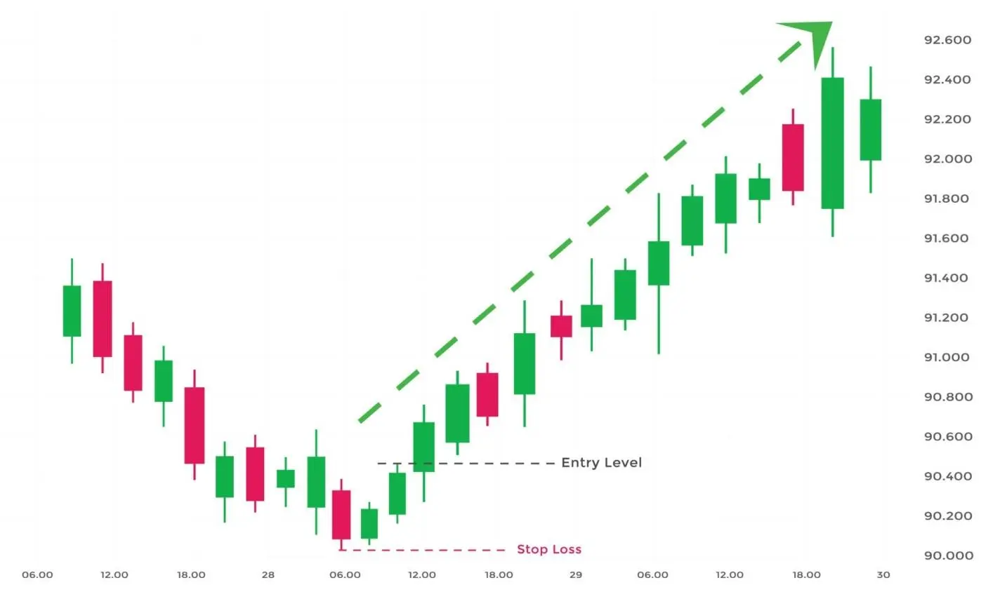

एक बड़ी नीचे की कैंडल, दूसरी छोटी ऊपर की कैंडल जो पिछली कैंडल में समायोजित होती है, और अंततः तीसरी ऊपर की कैंडल जो दूसरी कैंडल के बंद होने से ऊपर बंद होती हैं, ये तीनों अंदर से ऊपर की तरफ कैंडलस्टिक पैटर्न बनाते हैं।
इसलिए, यह पैटर्न बुलिश रिवर्सल के रूप में वर्गीकृत किया जाता है। हालांकि, यह एक छोटी सी अवधि की चलन होने के कारण हमेशा कोई भी थोड़ा या बड़ा बदलाव नहीं दर्शाता है। ट्रेडर्स तीन कैंडल अप/डाउन पैटर्न को आम रुप से देखते हुए सामान्य ट्रेंडलाइन का विचार करते हुए इस्तेमाल करने की सलाह देते हैं।
इसलिए, नीचे दिखाए गए तीन अंदर से ऊपर के पैटर्न बुलिश लगते हैं। इसका अर्थ है कि संपत्ति का डाउनट्रेंड समाप्त हो गया है, और कीमत अब उठना शुरू हो सकती है।
| Formation |
चलिए देखते हैं कि यह कैंडलस्टिक पैटर्न कैसे बनाया जाता है-

1. तीन अंदर ऊपर के कैंडल पैटर्न को देखने के लिए मार्केट पहले से डाउनट्रेंड में होना चाहिए।
2. पहली कैंडल एक बड़े बॉडी वाली डाउन कैंडल होगी। डाउन कैंडल, कभी-कभी एक काले कैंडल के रूप में जाना जाता है, जिससे एक गिरती कीमत का संकेत मिलता है।
3. अगली कैंडल ऊपर की तरफ होगी, जो डाउनट्रेंड में ब्रेकिंग का संकेत देती है। इस ऊपर की तरफ कैंडल का बॉडी पहली काले कैंडल के बॉडी से बिना छूए खुलता है और बंद होता है।
4. अंत में, तीसरी कैंडल सफेद होगी और दूसरी कैंडल के ऊपर बंद होगी।
| What Traders Interpret from a Three Inside Up Pattern? |
पहली मोमबत्ती पर, डाउनट्रेंड जारी रहता है, जिसमें नए निम्न स्तरों को बनाने के साथ एक बड़ी बिकवाली होती है। यह आम तौर पर विक्रेताओं का आत्मविश्वास बढ़ाता है जबकि नए खरीदारों को रोकता है।
पहली मोमबत्ती का डाउनट्रेंड नए निम्न स्तर तैयार करता हुआ एक महत्वपूर्ण बिकवाली का कारण बनता है। इस परिणामस्वरूप दूसरी मोमबत्ती पिछली मोमबत्ती की व्यापारिक सीमा में खुलती है।
इसे डाउनवर्ड तिरछे स्थान से जारी रखने की बजाय, यह पहली मोमबत्ती की सीमाओं के अंदर ही बंद होती हुई ऊपर जाती है।
यह आम तौर पर छोटे-से समय के लिए विक्रेताओं के लिए एक रेड फ्लैग होता है जो बाहर निकलने का रास्ता ढूंढ रहे होते हैं। तीसरी मोमबत्ती आम बुलिश रिवर्सल को पूरा करती है। यह लिंगर शॉर्ट विक्रेताओं को फंसाती है जबकि नए लंबे ट्रेडरों को आकर्षित करती है।
